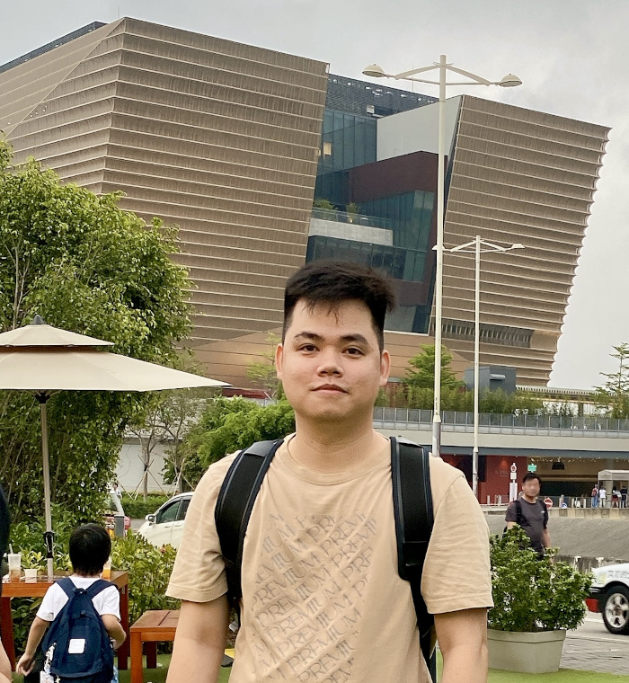

|

|
TRUONG Quang-Trungqttruong@connect.ust.hkI am a third year PhD student at Hong Kong University of Science and Technology, advised by Prof. Sai Kit YEUNG and graduated with a B.Sc. at Ho Chi Minh University of Science- VNU. |
News
- 21 June, 2023: Giving an invited talk about "Towards Attention-based Approaches for Video Object Segmentation" at UIT - VNU Slides.
- 24 Oct, 2022: Our paper accepted at MMM2023.
Research Interests
My research interests are video understanding and machine learning.
Selected Publications
- Marine Video Kit: A New Marine Video Dataset for Content-based Analysis and Retrieval.
Quang-Trung Truong, Tuan-Anh Vu, Tan-Sang Ha, Jakub Lokoc, Yue Him Wong, Ajay Joneja, and Sai-Kit Yeung.
International Conference On Multimedia Modeling, MMM 2023. Bergen, Norway.
Oral Project Page PDF
PDF
 Code
Code
- SideInfNet: A Deep Neural Network for Semi-Automatic Semantic Segmentation with Side Information.
Jing Yu Koh, Duc-Thanh Nguyen, Quang-Trung Truong, Sai-Kit Yeung, Alexander Binder.
European Conference on Computer Vision, ECCV 2020.
PDF
- Urban Zoning Using Higher-Order Markov Random Fields on Multi-View Imagery Data.
Tian Feng*,Quang-Trung Truong*, Duc-Thanh Nguyen , Jing Yu Koh, Lap-Fai Yu, Alexander Binder, Sai-Kit Yeung. ((*) Co-first author)
European Conference on Computer Vision, ECCV 2018. Munich, Germany.
PDF
Code
- SHREC17: RGB-D to CAD retrieval with ObjectNN dataset.
Binh-Son Hua, Quang-Trung Truong, Minh-Khoi Tran, Quang-Hieu Pham, Lap-Fai Yu, Duc Thanh Nguyen, Sai-Kit Yeung and et al.
Eurographics Workshop on 3D Object Retrieval, 3DOR 2017. France.
Project Page PDF
- Building The Facial Expressions Recognition System based on RGB-D Images in High Performance.
Quang-Trung Truong, Quoc-Ngoc Ly.
Asian Conference on Intelligent Information and Database Systems, ACIIDS 2016. Da Nang, Viet Nam.
Oral PDF
Code
Selected Awards
- HKUST Research Travel Grant 2022
- HKUST Postgraduate Studentship 2021-2024